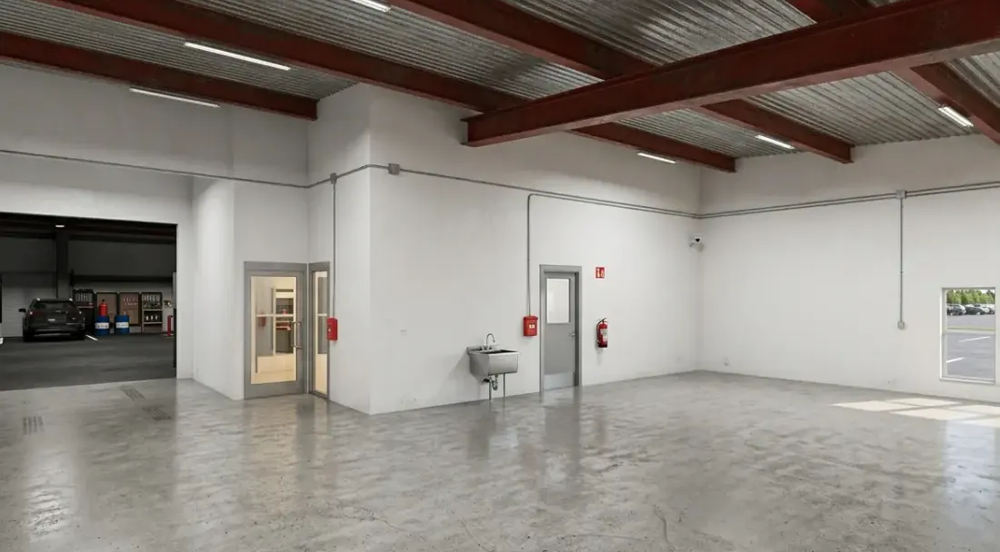

Signs Your E-Commerce Business Has Outgrown the Garage

You have outgrown the garage when the building starts costing you money: carrier cutoffs you miss because picking takes too long, inventory you can no longer count accurately, and deliveries your driveway cannot physically take. Revenue is a lagging signal. Those three are the real ones.
Most operators wait longer than they should, because the garage is free and the next step looks expensive. The cost of staying is just harder to see on a P&L.
The three signals that actually matter
The first is time. If picking and packing an average day takes more than an hour or two, you are paying for the layout in labour every single day. Fast movers buried behind slow ones is a space problem wearing a process costume.
The second is accuracy. When SKUs are mixed across a garage, a hallway, and a spare bedroom, your counts drift. Drifted counts mean overselling, refunds, and reorders placed on numbers that were never right.
The third is the driveway. Pallet deliveries, regular freight, and customer or courier pickups do not mix with a residential address. When a driver cannot get a pallet jack off the truck, the address has outgrown the business.
What you need next, specifically
A grade-level roll-up door so a truck can back to it and a pallet can come off at floor height. Enough clear height to rack vertically, which is where small operations find most of their capacity. Your own restroom and an air-conditioned front for a desk and a packing bench. Power for a wrapper, a printer, and whatever else you run.
Climate matters more than people expect in North Texas. If your product is sensitive, individual HVAC in your own unit means you set the thermostat rather than living with a shared setting.
How much space
Count the racking feet or pallet positions you use today and add about 30 percent, because a business that has finally decided to lease is usually already growing into it. Add the footprint of a packing bench and a staging area for outbound orders. Add a vehicle if one parks inside.
Most e-commerce operators making this move land between 1,500 and 2,000 SF. Under that, a co-warehousing unit may serve you better for a while. The full method is in what size flex space your business needs, and the trade-off against bundled space is in flex space vs co-warehousing.
The lease math nobody warns you about
Your quote will be triple net. The base rate is not your cost. Add the NNN estimate for taxes, insurance, and common-area maintenance, then add your own electric and internet, and compare that total to what the garage is costing you in hours and errors.
Ask three questions of any landlord: what is the base rate, what are estimated NNNs this year, and what did NNNs actually run last year. A landlord who cannot answer all three in one email is telling you something. The breakdown is in how much it costs to lease flex space in DFW.
Timing the move
Sign before peak season, not during it. Moving inventory in October costs you the quarter. Small-bay supply in North Texas has stayed tight through this cycle (Dallas Fed indicators), so the unit you want in September was usually leased in June.
FAQ
When should an e-commerce business move out of the garage?
When the building starts costing you money rather than saving it. The three signals are picking and packing that takes more than an hour or two a day, inventory counts that have drifted because SKUs are spread across multiple rooms, and pallet or freight deliveries a residential driveway cannot physically take.
How much warehouse space does a small e-commerce business need?
Most operators making this move land between 1,500 and 2,000 SF. Count the racking feet or pallet positions you use today, add about 30 percent for growth, then add a packing bench, a staging area for outbound orders, and any vehicle that parks inside.
What should I look for in a first warehouse unit?
A grade-level roll-up door so a truck can back to it and a pallet can come off at floor height, enough clear height to rack vertically, your own restroom, an air-conditioned front for a desk and packing bench, individual HVAC so you set the thermostat, and power for a wrapper and printers.
Walk the units
Rockwall Flex Park has 1,500, 2,000, and 3,000 SF bays reserving now for Summer 2027 — see the units, specs, and site plan.
Schedule a tour →